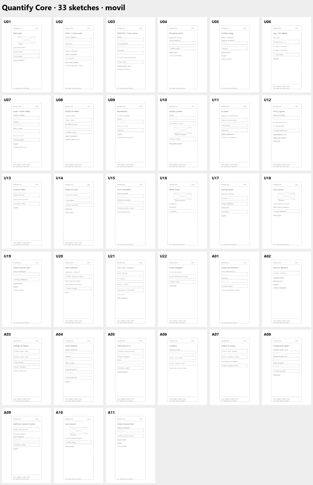

Recorridos guiados
Mapa del rol
El mapa completo conecta las 33 pantallas. Las salidas de la selección se resaltan sobre las demás rutas; sus condiciones completas aparecen en Conexiones. Línea discontinua: la acción permanece en la misma pantalla.
Historial de exploración
Consultar las 131 transiciones por pantalla y rol
Diagrama de Archify
El original conserva doce pantallas. Este explorador amplía la consulta a 33 con imágenes y relaciones de data.js. La especificación ampliada está preparada para una futura ejecución de Archify.
Abrir diagrama original en ventana completa ↗
Especificación original · Procedencia y validación histórica

33 nodos y 131 relaciones. Incluye autenticación, errores, bloqueo, recuperación, hábitos y operación administrativa. El prompt preparado y los límites se consultan en la documentación.